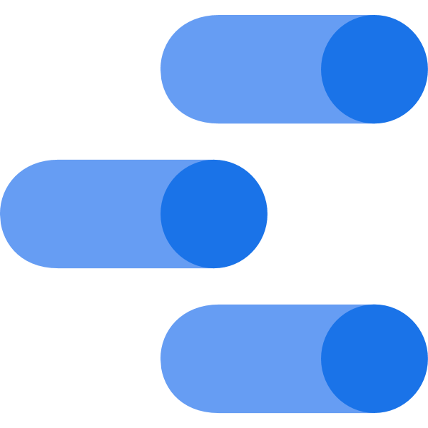
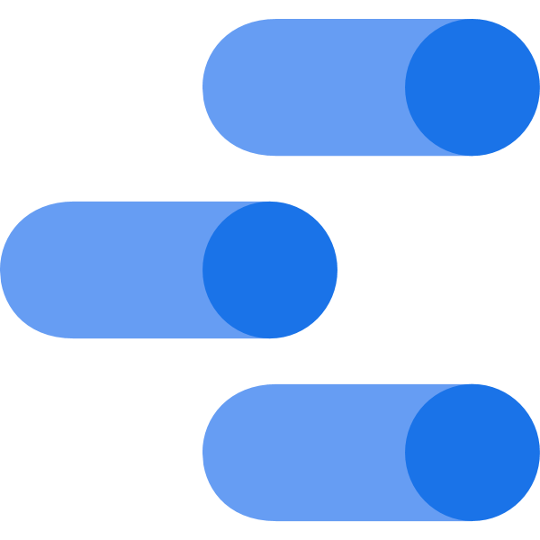
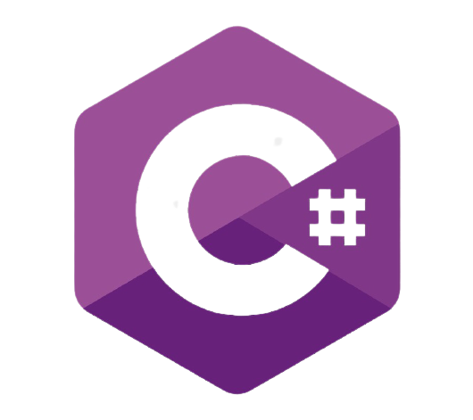
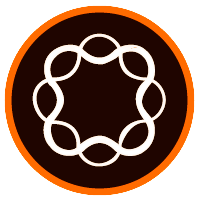
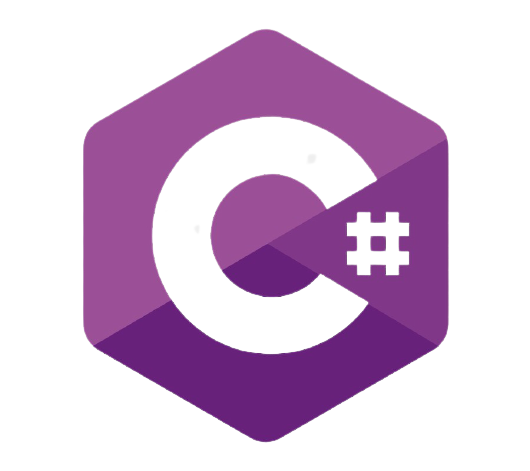
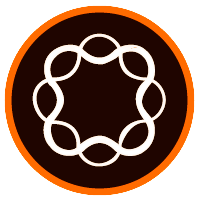

EXPERIÊNCIA
FOSTER - AGÊNCIA DE MARKETING DIGITAL
ESTÁGIO QA - FRONT-END
Outubro 2019 - Atual
Atuo como front-end, na maior parte do tempo dando manutenção corrigindo bugs em sites de hospitais como: HAOC, Hcor, AC Camargo, Bayer entre outros.
Utilizando as tecnologias: HTML5, CSS3, javascript, Wordpress, FosterOne e SiteCore.
Também auxilío o setor de B.I, na criação de relatórios.
Utilizando as tecnologias: Google Analytics, Data Studio e Search Console.
KAINOS - TELEATENDIMENTO
Consultor de Atendimento
Setembro 2016 - Fevereiro 2017
Atendimento (Cobrança ativa) aos alunos da Universidade Anhembi Morumbi, após 3 meses, em virtude dos resultados positivos, fui remanejado para a carteira OMNI CDC veículos e CDC Loja, onde obtive contato com a célula CHAT.
Monitor de Qualidade
Fevereiro 2017 - Abril 2018
Escuta de ligações, avaliação do contato para verificar pontos positivos e de melhorias no atendimento prestado pelos colaboradores, calibrações para alinhar conceitos das avaliações, aplicação dos procedimentos de qualidade aos novos colaboradores e realizava acompanhamento “lado a lado” esclarecendo dúvidas dos operadores.
AGRO QUÍMICA MARINGÁ
Menor Aprendiz
Fevereiro 2013 - Dezembro 2014
Controle de estoque da bomba de diesel dos caminhões, arquivista e Office boy externo.
EDUCAÇÃO
UNIVERSIDADE PAULISTA (UNIP)
Janeiro 2018 - Dezembro 2021
Bacharelado
Sistemas de Informação
Programador BR - Igor Oliveira
Cursando
Fundação Bradesco
- Curso: HTML – Básico / Período: 11 horas.
- Curso: HTML e CSS na Prática / Período: 24 horas.
- Curso: Fundamentos de Lógica de Programação / Período: 15 horas.
- Curso: Modelagem de Dados / Período: 12 horas.
- Curso: Ética no Desenvolvimento de Sistemas / Período: 8 horas.
- Curso: Sistemas Operacionais - Conceitos Básicos / Período: 5 horas.
- Curso: Introdução à Programação Orientada a Objetos / Período: 10 horas.
Wizard Idiomas
Curso: Inglês / Período: 2 anos.
Sodiprom
Curso: Aprendiz Administrativo / Período: 6 meses.
INTERESSES
Além de desenvolvedor web, sou apaixonado por dados em todas as suas vertentes como: banco de dados, análise de dados, Business Inteligence etc ...
Pretendo me pós graduar na área de Dados (Ciência de dados / Data Science).
Curiosidades
Fascinado por empreendedorismo, música e livros.


 


 


